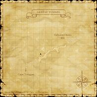
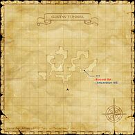

Description
Gustav Tunnel is a dungeon in Vollbow.
Map

Involved in Quests / Missions
| Quest / Mission | Type | Starter | Location |
|---|---|---|---|
| Cloak and Dagger | Weapon Skill (Dagger) | Jakoh Wahcondalo | Kazham (pos=J-9) |
Notorious Monsters
| Name | Level | Drops | Steal | Family | Spawns | Notes |
|---|---|---|---|---|---|---|
| Amikiri | 80 | High-Quality Scorpion Shell Kamewari Scorpion Claw Scorpion Shell Venomous Claw | — |  ScorpionsImage source ScorpionsImage source | — | A, H, Sc |
| Baobhan Sith | 77-81 | Cheviot Cloth | — |  GhostsImage source GhostsImage source | — | A, H, HP |
| Bune | 80 | Enhancing Sword Wyvern Scales Wyvern Skin Wyvern Wing | — |  WyvernsImage source WyvernsImage source | — | A, S |
| Goblinsavior Heronox | 55-59 | Eisentaenzer Goblin Helm Goblin Mail Gold Beastcoin | — |  GoblinsImage source GoblinsImage source | — | A, L, S |
| Taxim | 78-79 | Bone Chip Cocytus Pole Scroll of Blizzaga II Scroll of Blizzaga III Scroll of Blizzard III Scroll of Blizzard IV Scroll of Freeze Revival Tree Root | — |  SkeletonsImage source SkeletonsImage source | — | A, H, HP |
| Ungur | 80-82 | Ungur Boomerang Wyvern Scales Wyvern Skin Wyvern Wing | — | WyvernsImage source | — | A, S |
| Wyvernpoacher Drachlox | 70-75 | Goblin Armor Goblin Mask Gold Beastcoin Othinus' Bow | — | GoblinsImage source | — | A, L, S |
Regular Monsters


Event Monsters
| Name | Level | Drops | Steal | Family | Spawns | Notes |
|---|---|---|---|---|---|---|
| Baronial Bat | 82-82 | — | — |  Giant BatsImage source Giant BatsImage source | 1 | Spawned Quest: Cloak and Dagger |
| Gigaplasm | — | — | — |  SlimesImage source SlimesImage source | 1 | Spawned Mission: The Salt of the Earth |
| Macroplasm | — | — | — | SlimesImage source | 2 | Spawned Mission: The Salt of the Earth |
| Microplasm | — | — | — | SlimesImage source | 4 | Spawned Mission: The Salt of the Earth |
| Nanoplasm | — | — | — | SlimesImage source | 8 | Spawned Mission: The Salt of the Earth |
Maps

Story walkthroughs in this area
| Story | Mission / quest |
|---|---|
| ASA 6 | Enemy of the Empire (II) |
References
External references describe their own server or retail rules. Documented Zenith changes take precedence.
Map credits: Map 1 — HorizonXI Wiki · Map 2 — HorizonXI Wiki. Original game maps © SQUARE ENIX; redrawn maps retain the credited authorship and license.


Additional level-75 reference




|
This tunnnel connects Valkurm Dunes with Cape Teriggan. Adventurers seeking to make it back into daylight on the otherside must traverse this long dark tunnel, carefully avoiding the various monsters that inhabit this foul passage. Numerous powerful Wyverns also live here, most notably Bune, who can often be seen defeating unsuspecting passersby. |
Connecting Areas
- Valkurm Dunes at (K-6)
- Cape Teriggan at (D-11) Note: Only allows access to a limited area of Cape Terrigan.
- Escapes to: Valkurm Dunes (B-8)
Involved in Quests/Missions
|
Quest |
Type |
Starter |
Location |
| Cloak and Dagger | Weapon Skill (Dagger) | Jakoh Wahcondalo | Kazham (J-9) |
| Mission | Country | Starter | Location |
| Bastok Mission 9-1:The Salt of the Earth | Bastok | Bastok Gate Guard | Bastok |
Notorious Monsters Found Here
|
Name |
Level |
Drops |
Steal |
Family |
Spawns |
Notes | |||||||
| Amikiri | 80 | Scorpion | |||||||||||
| Baobhan Sith | 77 - 81 | Ghost | |||||||||||
| Baronial Bat | 82 - 82 | Giant Bat | |||||||||||
| Bune | 80 - 80 | Wyvern | |||||||||||
| Gigaplasm | Unknown | Slime | |||||||||||
| Goblinsavior Heronox | 55 - 59 | Goblin | |||||||||||
| Macroplasm | Unknown | Slime | |||||||||||
| Microplasm | Unknown | Slime | |||||||||||
| Nanoplasm | Unknown | Slime | |||||||||||
| Taxim | 78 - 79 | Skeleton | |||||||||||
| Ungur | 80-82 | Wyvern | |||||||||||
| Wyvernpoacher Drachlox | 70 - 75 | Goblin | |||||||||||
|
HP = Detects Low HP; M = Detects Magic; Sc = Follows by Scent; T(S) = True-sight; T(H) = True-hearing JA = Detects job abilities; WS = Detects weaponskills; Z(D) = Asleep in Daytime; Z(N) = Asleep at Nighttime | |||||||||||||
Mobs Found Here
|
Name |
Level |
Drops |
Steal |
Family |
Spawns |
Notes | |||||||
| Antares | 77 - 79 | Scorpion | |||||||||||
| Demonic Pugil | 73 - 76 | Pugil | |||||||||||
| Doom Guard | 75 - 77 | Skeleton | WAR | ||||||||||
| Doom Mage | 65 - 67 | Skeleton | BLM | ||||||||||
| Doom Soldier | 65 - 67 | Skeleton | WAR | ||||||||||
| Doom Warlock | 76 - 78 | Skeleton | BLM | ||||||||||
| Earth Elemental | 75 - 77 | Elemental | dust & sand storms | ||||||||||
| Erlik | 75 - 78 | Ghost | |||||||||||
| Fire Elemental | 75 - 77 | Elemental | during hot spells and heat waves | ||||||||||
| Goblin Alchemist | 65 - 68 | Goblin | WHM | ||||||||||
| Goblin Mercenary | 65 - 68 | Beastcoin | Goblin | WAR | |||||||||
| Goblin Poacher | 46 - 49 | Goblin | RNG | ||||||||||
| Goblin Reaper | 46 - 49 | Goblin | DRK | ||||||||||
| Goblin Robber | 46 - 49 | Goblin | THF | ||||||||||
| Goblin Shepherd | 65 - 68 | Beastcoin | Goblin | BST | |||||||||
| Goblin's Leech | 53 - 55 | Leech | |||||||||||
| Greater Gaylas | 46 - 49 | Bat Trio | |||||||||||
| Hawker | 45 - 48 | Fly | L,H | ||||||||||
| Hell Bat | 44 - 48 | Giant Bat | L,H | ||||||||||
| Labyrinth Leech | 45 - 48 | Leech | |||||||||||
| Labyrinth Lizard | 46 - 49 | Lizard | |||||||||||
| Makara | 46 - 49 | Pugil | |||||||||||
| Robber Crab | 65 - 68 | Crab | |||||||||||
| Typhoon Wyvern | 78 - 80 | Wyvern | |||||||||||
|
HP = Detects Low HP; M = Detects Magic; Sc = Follows by Scent; T(S) = True-sight; T(H) = True-hearing JA = Detects job abilities; WS = Detects weaponskills; Z(D) = Asleep in Daytime; Z(N) = Asleep at Nighttime | |||||||||||||
Adapted from Eden Wiki: Gustav Tunnel · Contributors and history · CC BY-SA 4.0. Revision 45908. Layout, links and optional background text adapted for Zenith.